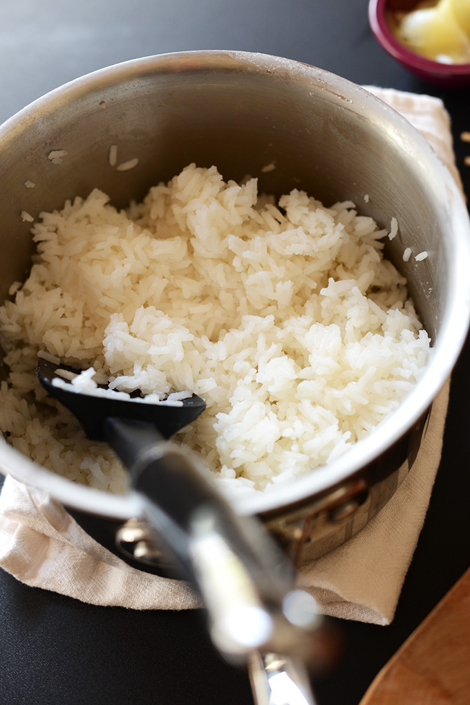

White Rice

Extremely simple, versatile, white rice recipe. Makes 8 1/4-cup servings.
Ingredients
- 1 cup white rice
- 2 cups water
Instructions
-
Add rice and water to a medium saucepan and bring to a boil over high heat.
Once boiling, lower heat to a simmer and cover.
Ensure it’s simmering and not boiling or the rice can cook too quickly.
-
Simmer until water is completely absorbed and rice is tender –
about 15-25 minutes (will depend on size and freshness of rice).
Drain off any excess water if there is any (there shouldn’t be).
-
(Optional) Turn off the heat,
remove the lid, fluff with a fork,
put the lid back on,
and let rest for 10 minutes so the moisture redistributes to prevent mushy rice.
-
Store cooled leftovers covered in the refrigerator up to 5-6 days,
or in the freezer up to 1 month.
Reheat in the microwave or on the stovetop with a little oil or water until warm.
Source:
How to Cook White Rice